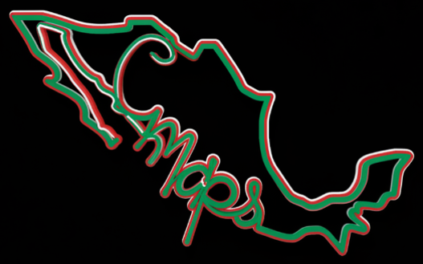

TE DAMOS INTELIGENCIA PARA DECIDIR, PLANEAR Y ACTUAR.
"El abstencionismo es el partido más grande de México".
CMAPS revela el TERRITORIO DE LOS NO REPRESENTADOS: Millones de ciudadanos desencantados, listos para involucrarse si la propuesta es real y llega a su calle.
El territorio que define: A veces una elección se define por una colonia; a veces un negocio se pierde por una calle. Hemos observado municipios donde el 60% de abstención los hace hoy los más inseguros. Los mapas no mienten.
🔴 MAPAS ROJOS: Máxima Incidencia Delictiva (La Consecuencia).
🔵 ÁREAS AZULES: Alta Abstención Electoral (La Causa del Quiebre).
Aviso Importante: Dado que el mapa carga capas de datos complejas, la versión incrustada puede tardar unos segundos en computadoras. En celular, recomendamos usar el botón para verlo en pantalla completa.
"Donde el ciudadano vuelve a involucrarse, vuelve la seguridad, la inversión y la esperanza".
Si eres líder, empresario o autoridad, hablemos de cómo mapear contigo. Este demo es solo la punta del iceberg.
SOLICITAR SESIÓN ESTRATÉGICAContacto Directo: politeiacmaps@gmail.com | Tel: 5589342136